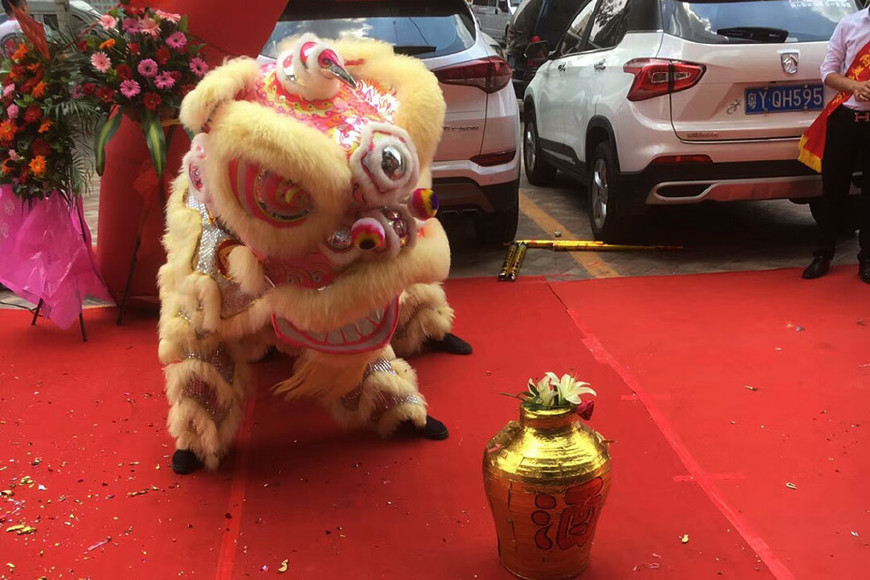
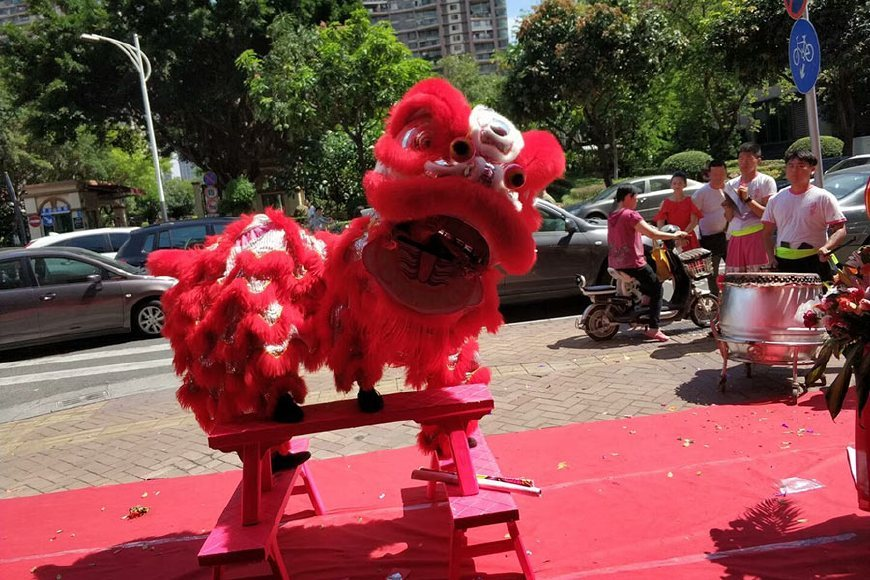
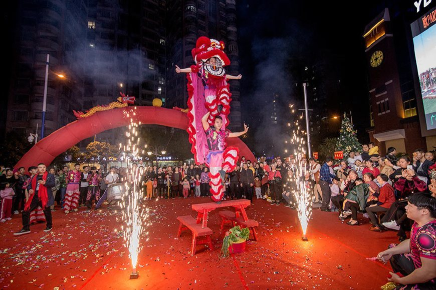

没有记忆的城市是肤浅的。
在老街漫步，斑驳的印记总在不经意间流露出来，有一种沧桑气质是由岁月所锻造出来的。
不妨绕开人群，走进有些僻静的小街里弄，发现繁华城市背后的老骑楼、老字号、古码头、青石路、手艺人的故事……
舞狮是一门集武术、舞蹈、锣鼓于一体的综合性艺术，在中国民间中国，舞狮文化源远流长。而说到醒狮文化，我们不得不提被誉评为“中国醒狮之乡”的广东遂溪县。
遂溪县隶属于广东湛江市，位于位于广东省西南部的雷州半岛上，西临北部湾，东临湛江港湾。遂溪县民间醒狮表演活动源远流长，历史悠久，早从明、清开始，就形成了舞狮习俗，并经历了起源于民间而生、植根于民间而荣、传承于现代而兴的发展过程。2003年12月遂溪县被中国民间文艺协会命名为中国醒狮之乡。
遂溪醒狮不仅继承南狮风格特点，同时还融合了武术、舞蹈、音乐、杂技、美术、文学于一体，是优秀的传统艺术文化。遂溪醒狮表演风格有单狮、双狮、多狮，有地狮、高桩狮(梅花桩舞狮)等。表演套路也十分的丰富，技艺高超，动作惊险，形神兼备。不仅能体现狮子的霸气、威武、勇猛狂傲的性格，同时也能把醒狮的神韵、气质艺术化地展现出来，是湛江地区最具独特风格的醒狮表演。特别遂溪醒狮中的高桩狮表演更是以其独特的“新、高、难、险”的特技被载入上海吉尼斯世界纪录。多支遂溪醒狮团也在全国舞狮大赛上获得各项奖项荣誉。
近年来，遂溪醒狮得到了极大的发展，目前该县境内拥有的醒狮图(舞狮团)已接近300个，包括有男子醒狮队、女子舞狮队在内的表演人员达一万多人，是实实在在的“中国醒狮之乡”。
强大的舞狮人口也造就了遂溪醒狮独特魅力的醒狮文化，“遂溪醒狮艺术节”就是其中的精髓，每年的遂溪醒狮艺术节都能吸引全球各地的游客来观看。
此外，遂溪醒狮还于2006年6月2日入选首批国家级非物质文化遗产名录，成为了国家级非物质文化遗产。在2008年北京奥运会上，遂溪醒狮还代表中国传统文化表演并作为特约嘉宾出席了开模式并进行了表演。目前，遂溪醒狮每年还代表中国出访世界各国，备受世人尊重与好评。